Notícias
Acompanhe as últimas notícias do Instituto Canopus e fique atualizado sobre nossos eventos, cursos, fotos e muito mais.

49º Encontro Estilo de Vida Canopus celebra uma trajetória de conexões e transformação em Cuiabá
Entre os dias 24 e 26 de julho de 2026, Cuiabá (MT) recebeu o 49º Encontro Estilo de Vida Canopus, uma edição especial que reuniu 64 participantes e 22 voluntários em três dias de convivência, reflexão e desenvolvimento humano. Chegar à 49ª edição representa mais do que alcançar um número. É a expressão de uma trajetória construída encontro após encontro, por pessoas que escolheram dedicar tempo para olhar com mais atenção para si mesmas, para suas relações e para a forma como desejam conduzir suas próprias histórias.
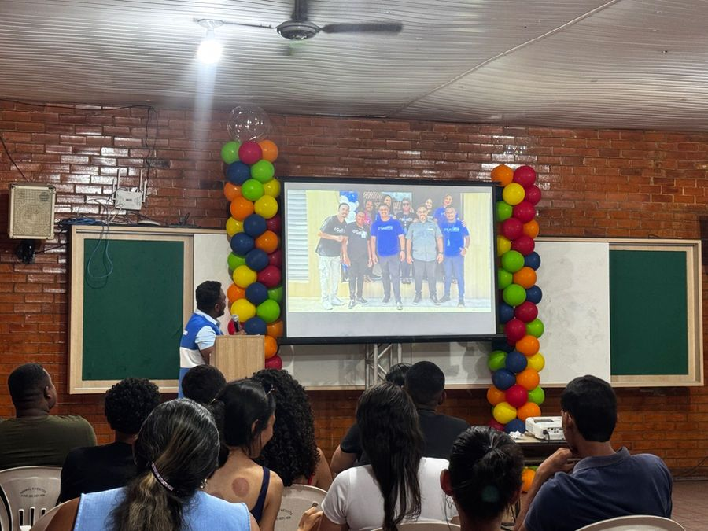
2º Encontro Estilo de Vida Canopus reúne 41 participantes em Teresina
15 de set.
3º Encontro Estilo de Vida Canopus reúne 48 participantes em Recife
15 de set.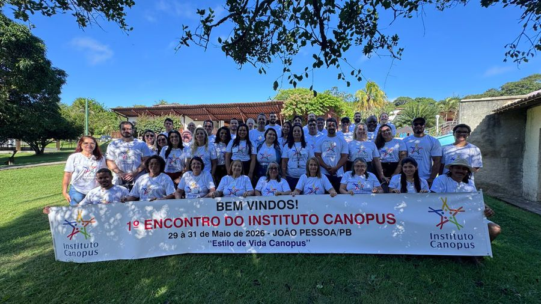
1º Encontro Estilo de Vida Canopus promove conexão e desenvolvimento humano em João Pessoa
15 de set.
19º Encontro Estilo de Vida Canopus reúne participantes e voluntários em Juína
15 de set.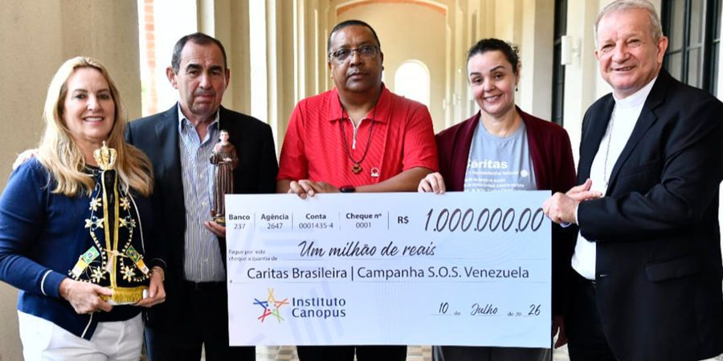
Instituto Canopus destina R$ 1 milhão para apoiar vítimas dos terremotos na Venezuela
13 de ago.Nossos Projetos
Conheça os projetos do Instituto Canopus. Somos uma instituição social, sem fins lucrativos, que tem como objetivo compartilhar informações e conhecimentos por meio de cursos e treinamentos para toda a sociedade. Aqui, você pode explorar nossos projetos e programas. Nosso objetivo é fazer a diferença na vida das pessoas, oferecendo-lhes as habilidades necessárias para enfrentar os desafios do mundo moderno. Convidamos você a se juntar a nós em nossa missão e explorar tudo o que o Instituto Canopus tem a oferecer.
Estilo de Vida Canopus
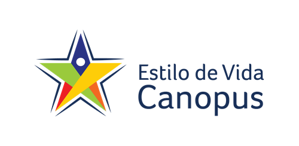
Comunicação, educação, assistência social, desenvolvimento comunitário, cultura e arte.
Nasceu em 2004, com objetivo de contribuir no desenvolvimento e transformação pessoal oferecendo a oportunidade de o indivíduo repensar a qualidade de vida nas relações consigo mesmo, com Deus, com a família, com os amigos, com o trabalho e com o meio ambiente. Para desenvolver o equilíbrio do ser humano, tanto físico como espiritual, realizar planejamento de 100 anos de vida e para incentivar o exercício do voluntariado com realização de ações e projetos que visam melhorar a qualidade de vida das comunidades onde o Instituto Canopus está inserido.
Área de atuação: Comunicação, educação, assistência social, desenvolvimento comunitário, cultura e arte.
Público Alvo: Homens e mulheres maiores de 18 (dezoito) anos.
Números: Média de edição por ano: 20
Média de Voluntários por ano: 500
Média de participantes por ano: 1.200
Contribui com Objetivos de Desenvolvimento Sustentável – ODS
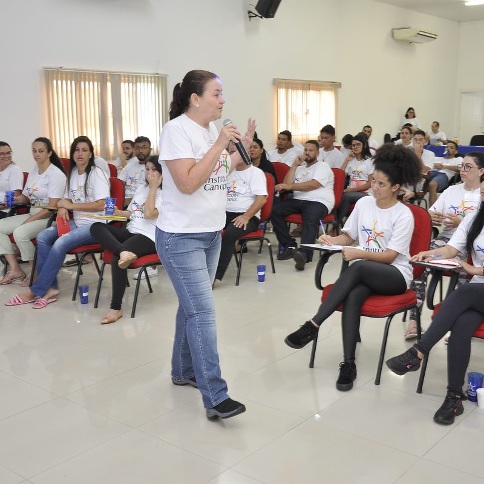
Constelation Dança, Arte e Cultura
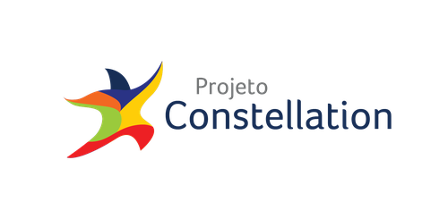
Projeto CulturalEducação, cultura, arte e formação de dançarinos.
O Projeto nasceu em 2011, em Cuiabá/MT. Chamado Caça Talentos, tinha o ideal de proporcionar melhoria na qualidade vida, por meio de atividades culturais, no seguimento da dança para crianças e adolescentes de ambos os sexos, na faixa etária de 06 (seis) à 17 (dezessete) anos, que se encontram com vínculos familiares fragilizados ou rompidos, em situação de vulnerabilidade socioeconômica ou que tivessem sido vítimas de maus tratos, abuso, violência psíquica ou física, dentre outros. Promovendo a reconstrução do projeto de vida e o retorno à convivência familiar e comunitária.
No entanto, após alguns anos de projeto, sentiu-se a necessidade de incluir uma abordagem de caráter formativo e educacional. A união da teoria à prática, por meio de técnicas utilizadas nas criações da dança, possibilitou aos alunos ampliar a sua percepção do mundo. Dessa forma, em 2017, o projeto foi reestruturado, denominado Projeto Constellation Dança: Arte e Cultura, ampliando suas ações culturais para as comunidades carentes.
Área de atuação: cultura e arte, educação, assistência social, desenvolvimento comunitário, defesa dos direitos.
Público alvo: Meninos e meninas de 5 (cinco) à 15 (quinze) anos.
Números:
Colaboradores: 4
Média de participantes por ano: 320
Contribui com Objetivos de Desenvolvimento Sustentável – ODS

Primeiro Passo
Educação, geração de emprego e renda, desenvolvimento comunitário.Formação de jovens e adultos para a inclusão no mercado de trabalho.
Em 2009 foi criado o Projeto Primeiro Passo, com objetivo de desenvolver jovens através de cursos profissionalizantes, formando e capacitando especialmente os que vivem em situação de vulnerabilidade socioeconômica, encaminhando-os para o mercado de trabalho, fazendo parcerias com empresários locais para inserção da mão de obra qualificada.
A qualificação tornou-se um projeto de investimento, apoia os jovens para que eles tenham condições de inclusão no mundo do trabalho, possibilitando o desenvolvimento de competências necessárias ao exercício profissional, transmitindo conhecimentos sobre a realidade do mercado de trabalho, por meio de aulas práticas ministradas por profissionais voluntários do Instituto Canopus.
O projeto contribui para o fortalecimento da identidade pessoal e coletiva dos jovens, para que tenham seus vínculos familiares e comunitários fortalecidos.
Área de atuação: Educação, Geração de Emprego e Renda, Desenvolvimento comunitário.
Público alvo: Adolescentes e Jovens de 15 (quinze) a 24 (vinte e quatro) anos.
Números:
Média de edição por ano: 14
Média de Voluntários por ano: 200
Média de participantes por ano: 700
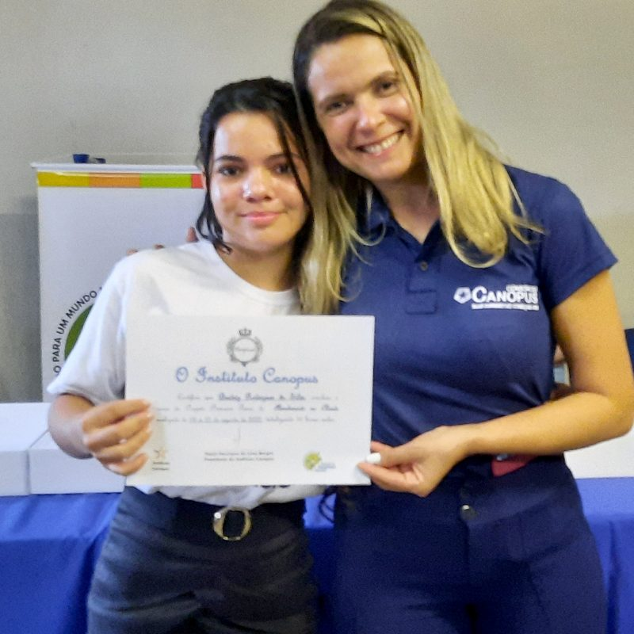
Colcha de Retalhos
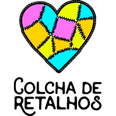
Comunicação, educação, assistência social, desenvolvimento comunitário, cultura e arteDesenvolvimento humano, desenvolvimento profissional e qualidade de vida.
Em 2016, movida pelo desejo de preservar o trabalho artesanal e resgatar a dignidade das mulheres, foi criado o Projeto Colcha de Retalhos, inspirado nos valores da matriarca da família Sra. Irene Cruz, com atuação nas comunidades carentes do município de Várzea Grande/MT, preservando a cultura, o talento, a tradição e a arte popular.
O projeto tem como objetivo proporcionar conhecimento, inclusão social e geração de renda as mulheres em situação de vulnerabilidade financeira, visando à autonomia socioeconômica, oferecendo oportunidades concretas de inserção das artesãs no mercado de trabalho e renda, contribuindo com a empregabilidade, a ocupação profissional, educação, direitos, cidadania e preservação do meio ambiente, por meio da reciclagem de retalhos de tecidos. Os produtos do Projeto Colcha de Retalhos são desenvolvidos com retalhos doados por uma rede de parceiros.
Área de atuação: Desenvolvimento comunitário, Comunicação, Cultura, Educação, Meio Ambiente, Empreendedorismo/Geração de Emprego e Renda.
Público alvo: Mulheres acima de 18 (dezoito) anos.
Números:
Colaboradores: 1
Voluntários: 6
Média de participantes por ano: 18
Itens produzidos por ano: 628
Contribui com Objetivos de Desenvolvimento Sustentável – ODS
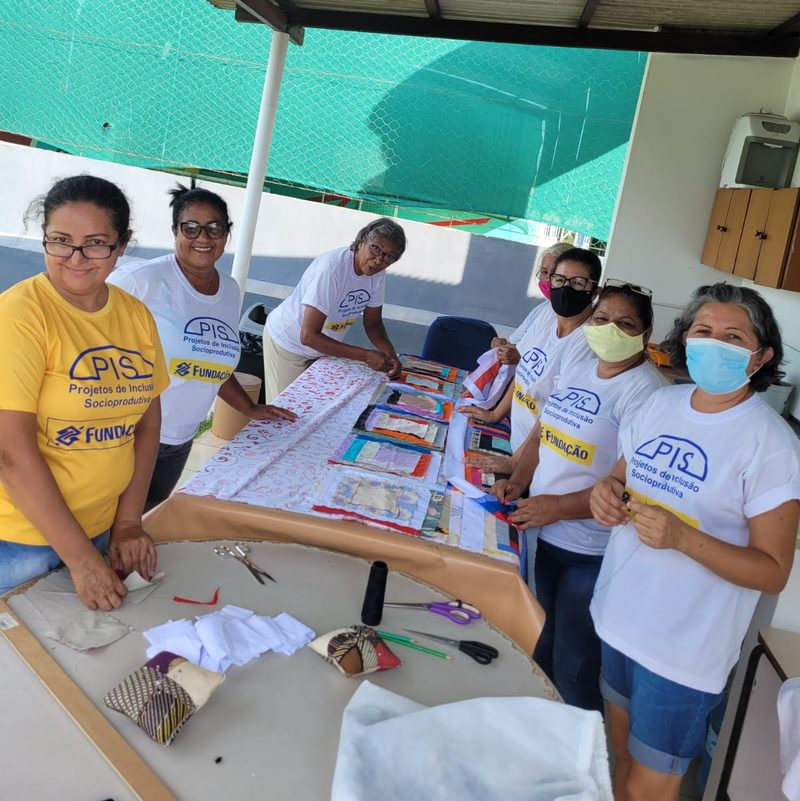
Projeto Superação
Na intenção de continuar atuando de forma responsável na sociedade, o Sr. Marcos Cruz criou o Projeto Superação voltado para a formação da pessoa humana, em várias áreas da sua vida como uma oportunidade para o autoconhecimento e para a sua auto avaliação. Possibilitando aos participantes resgatar valores adormecidos; promovendo a valorização dos dons e talentos de cada um; acreditando na capacidade de realização individual; incentivando e promovendo o Empreendedorismo.
As atividades disponibilizadas trabalharam a aprendizagem no formato de plano de aula estruturado, divididos em 6 etapas, com a carga horária de 8 horas, sendo ofertadas 70 vagas.
As atividades são organizadas para execução de um dia de aula, restritas ao contexto da sala de aula virtual, com foco no desenvolvimento de competências e habilidades.
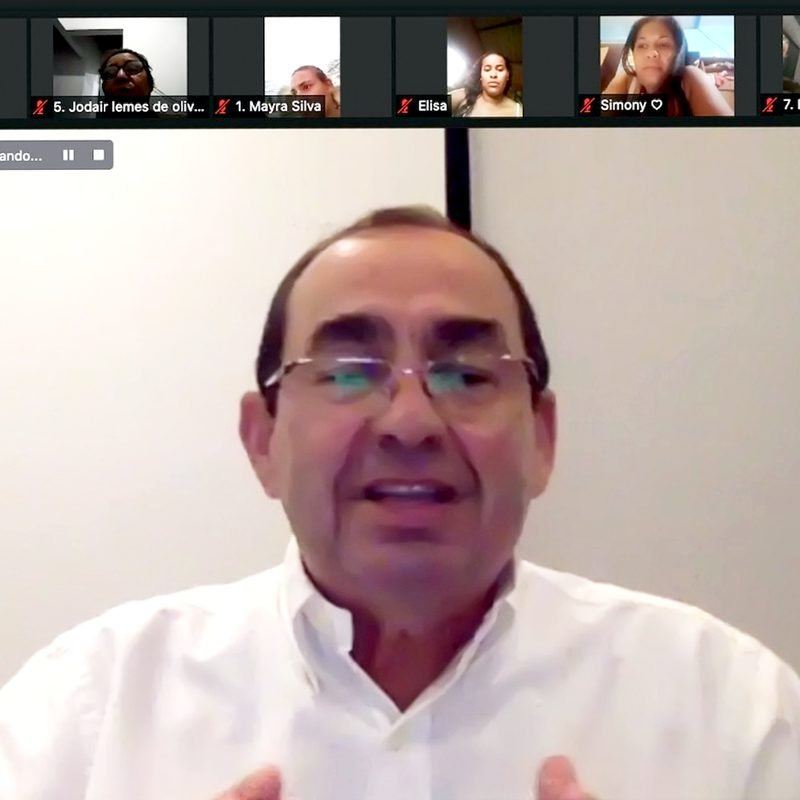
Criança Feliz Canopus
Cultura, arte e educação.Desenvolvimento humano, desenvolvimento profissional e qualidade de vida.
O Projeto Criança Feliz Canopus, criado em 2011 é um projeto cultural, aliando arte e educação em um ambiente saudável e familiar, que atua nas áreas do conhecimento, cultura, lazer e entretenimento, com objetivo de integrar crianças e jovens de escolas públicas, colaboradores e comunidade desenvolvendo atividades lúdicas, esportivas e recreativas promovendo a socialização e o espírito de equipe.
As atividades são realizadas nas empresas do grupo Canopus em parceiras com várias instituições, com a finalidade de proporcionar Felicidade com Educação, estimulando as potencialidades, os talentos das crianças e jovens, contribuindo assim, na formação de uma identidade e uma consciência crítica, reflexiva perante a sociedade oferecendo meios para o desenvolvimento profissional, melhorando sua qualidade de vida e de sua família.
Caracterizam-se pelo aprimoramento e aproveitamento do potencial da criança, pois, as atividades realizadas visam desenvolver a psicomotricidade, através de atividades lúdicas, que proporcionam a ampliação das habilidades corporais e contribuem para o aprimoramento das relações sociais.
Área de atuação: cultura e arte, educação, assistência social, defesa dos direitos.
Público alvo: Crianças e adolescente de 06 (seis) a 14 (quatorze) anos
Números:
1 vez ao ano
Média de Voluntários por ano: 2.400
Média de participantes por ano: 17.000
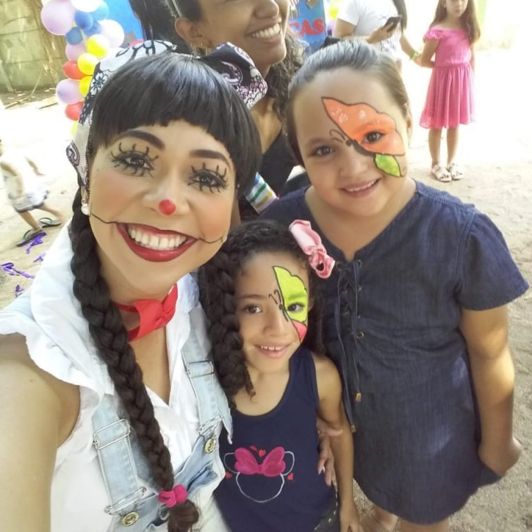
Projeto Saciar
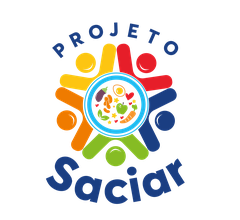
Projeto AssistencialDistribuição de alimentos para garantir o direito básico à alimentação
O mundo enfrentou uma das maiores pandemias da história recente, a covid-19, com índices alarmantes de contaminação pelo novo coronavírus, deixando vítimas fatais. À medida que a doença se espalhou pelo país, aumentaram as preocupações sobre os impactos da pandemia nas populações socialmente mais vulneráveis.
Desta forma, o Instituto Canopus, preocupado com o alto índice de famílias que se encontravam e se encontram em situação de risco social, lançou o Projeto Saciar.
Com a intenção de suprir estas necessidades o Instituto mobilizou empresas, voluntários, governos e sociedade civil, na arrecadação de alimentos e na distribuição de cestas básicas, que foram doadas, mensalmente, às pessoas necessitadas, cadastradas.
O Projeto Saciar foi construído com base na garantia, defesa e promoção dos direitos humanos e de cidadania e compreendido como uma iniciativa para o combate à exclusão social, uma vez que estaria atuando na redução de sua forma endêmica, causada pela fome, pelo desemprego, pela violência, enfim, pela quase absoluta falta de perspectiva de vida.
Público Alvo: famílias de baixa renda e extrema pobreza.
Abrangência: Para todos os municípios de atuação das empresas Canopus e Instituto.
Contribui com Objetivos de Desenvolvimento Sustentável – ODS
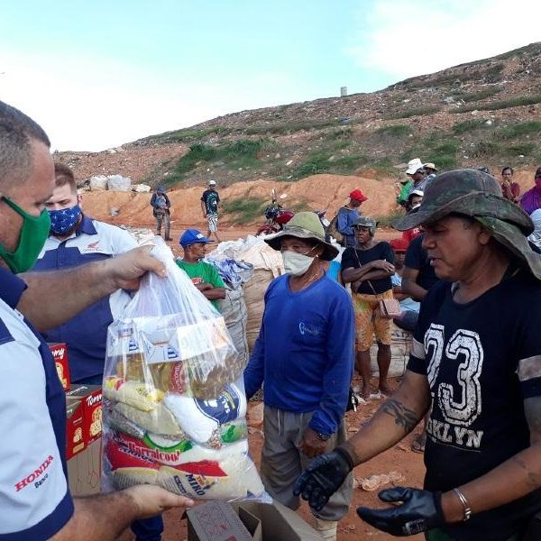
Despertando Sonhos
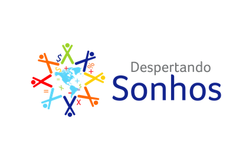
A Educação Financeira está presente em toda vida de cada cidadão.
O conhecimento sobre Educação Financeira é a base, para o cidadão entender seus diretos e deveres. Nos últimos anos, o tema educação financeira tem ganhado grande repercussão. Atualmente ter noções de finanças é essencial auxiliando na qualidade de vida. A necessidade de educar os jovens para agir no ambiente financeiro define a realização conjunta dos pais e da sociedade. A educação financeira sempre foi importante para auxiliar as pessoas a planejar e administrar sua renda, investimentos e garantir uma vida financeira mais estável. O objetivo da Educação Financeira não se limita a ajudar pessoas a controlar o seu dinheiro por meio da gestão, ela permite que todos tenham mais conhecimento e compreensão sobre seus próprios gastos e investimentos, e saibam agir em dificuldades inesperadas. Além disto, melhora as relações pessoais e profissionais, para que possam ficar tranquilos e equilibrar sua situação financeira.
Na prática a importância da Educação Financeira é possibilitar que uma pessoa escolha como administrar seu próprio dinheiro de forma adequada. O problema, em tal caso, é que muitas famílias desconhecem o tema e isso causa dificuldades para ensinar o assunto aos seus filhos. Está relacionada à questão cultural, a economia do país. Por isso o assunto ensinado em escolas, seria de apoio para os pais.
PÚBLICO ALVO
Direto: Crianças, adolescentes e jovens.
Indireto: Famílias e escolas
OBJETIVOS
Educação financeira para crianças, adolescentes e jovens
- Oportunizar aprendizado e desenvolver competências: autocontrole emocional, disciplina, organização e planejamento, gestão e inteligência financeira;
- Ensinar a consumir e a poupar de modo ético, consciente responsável;
- Favorecer melhoria na qualidade de vida e bem-estar às famílias;
- Promover a valorização dos dons e talentos de cada um;
- Reduzir o índice de crianças e jovens em situações de risco, dando a eles formação e oportunidades.
Fênix Esporte em Ação
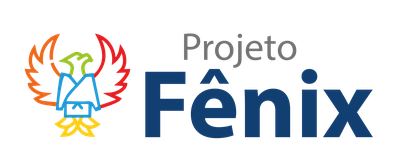
Proporcionar ações de valorização da cultura e esporte, ofertando oficina de capoeira e karatê para 200 (duzentas) crianças e adolescentes integrantes das famílias de baixa renda em situação de vulnerabilidade social, de forma que assegurem o desenvolvimento físico mental, social, cognitivo, liderança, mediação de conflitos, disciplina, respeito e trabalho em equipe.
PÚBLICO ALVO
Direto: Crianças, adolescentes e jovens.
Indireto: Famílias, escolas e comunidades.
OBJETIVOS ESPECÍFICOS
Realizar atividades que atendam crianças e adolescentes simultaneamente em Cuiabá-MT, com 2 (duas) aulas semanais, tendo a estimativa de impacto na vida de 200 (duzentas crianças) durante o período de 12 (doze) meses do Projeto, em duas unidades parceiras localizadas na regional sul de Cuiabá;
Desenvolver a capacidade de socialização, interação, educação e disciplina assim como habilidades físicas, motoras, técnicas, táticas e aptidões de futuros talentos para o esporte, assim como o senso de competição saudável, formando crianças e adolescentes preparados para os desafios da vida e detentores de princípios e valores;
Buscar a integração das crianças e adolescentes participantes das oficinas de Capoeira e Karatê eventos e atividades, promovendo a participação, envolvimento e o engajamento dessas crianças e adolescentes com o seu desenvolvimento pessoal;
O ensino e a filosofia da Capoeira e do Karatê os benefícios, que se funda princípios ligados ao respeito mútuo com o equilíbrio do corpo e mente como uma forma a alcançar e aprimorar o caráter e a harmonia na convivência social, buscando sempre a conformidade com erros e uma vida de autoconfiança e consideração ao próximo;
O desenvolvimento de virtudes, princípios e valores, por meio da formação de uma consciência comunitária e cidadã;
A melhoria do desempenho e proficiência escolar.